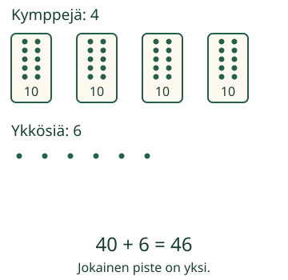
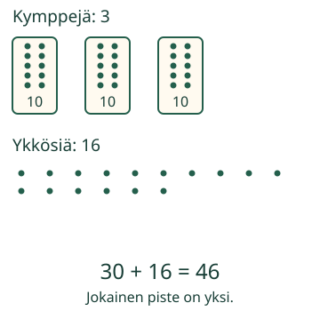

Voiko kympin avata?
Aavalla on 46 tikkua. Hän tarvitsee irtotikkuja. Voiko nipun avata ilman lisätikkuja?
Voin avata kympin. Määrä pysyy samana.
Samat tikut kahdella tavalla
Yhdessä nipussa on 10 tikkua. Yksi irtotikku on yksi ykkönen.

Avaa yksi nippu. Sen kymmenen tikkua tulevat irtotikkujen luo.

Mieti
Tuleeko avatusta kympistä yksi vai kymmenen ykköstä?
Paljasta ajatus
Kymmenen. Jos vaihtaisit kympin vain yhteen ykköseen, saisit 30 + 7 = 37. Se ei ole enää 46.
Katso avaus
Kokoa itse
Uusi luku: 23
Kaksi kymppiä ja kolme ykköstä on 23. Avaa yksi kymppi: yksi kymppi ja kolmetoista ykköstä. 20 + 3 = 10 + 13.
Myös 40:n nipun voi avata. Neljä kymppiä ja nolla ykköstä muuttuu kolmeksi kympiksi ja kymmeneksi ykköseksi: 40 = 30 + 10.
Tutki lisää
Voiko kaikki 46 tikkua pitää irtona?
Paljasta ajatus
Kyllä: 0 kymppiä ja 46 ykköstä.
Mikä tapa on sinusta helpoin laskea?
Opettajalle ja ilman ruutua
Luokat 1–2. Vaadittu esitieto on M-PLACE-02. Käytä samanlaisia tikkuja tai kuutioita. Tee niput kymmenestä, avaa ja sido takaisin. Aikuinen voi lukea tekstin; nimeämistä, puhetta tai ylimääräisiä laskentatäpäytyksiä ei vaadita.
Ykkösten määrä voi tässä olla yli yhdeksän. Kenttä ei tarkoita vain luvun viimeistä numeroa. Harjoituksen luvut ovat 6, 10, 23, 40 ja 46. Muokattavissa kentissä sallitaan 0–4 kymppiä ja 0–49 ykköstä. Samaksi määräksi hyväksytään kaikki näiden rajojen hajotelmat, jotka täyttävät näkyvän irtotikkuehdon. Oikea määrä ja vielä täyttymätön ehto erotetaan palautteessa.
Malli näyttää yhden kympin avaamisen toistettavasti; tikut säilyvät samankokoisina ja samat pisteet ovat mukana. Toisto on havainnollistus, ei mitattu työaika. Mallin tutkiminen on erillään harjoituksen vastauksesta. Tarkistus koskee nykyistä hajotelmaa, eikä osoita, että oppilas teki tietyn avaussarjan tai niputti käsin. Ei henkilötallennusta, itsenäisen hallinnan tai muistamisen väitettä. Ilman JavaScriptiä kuvat, selitykset ja oikeilla tikuilla tehtävä harjoitus toimivat.
Lopuksi: miksi 3 kymppiä ja 16 ykköstä on sama kuin 4 kymppiä ja 6 ykköstä?